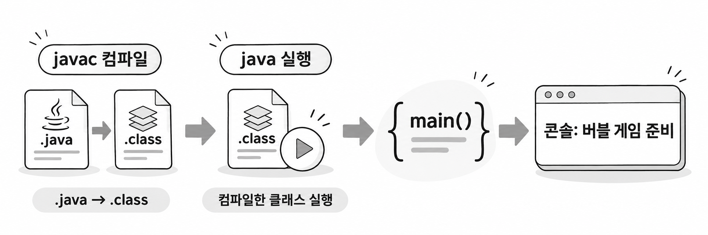
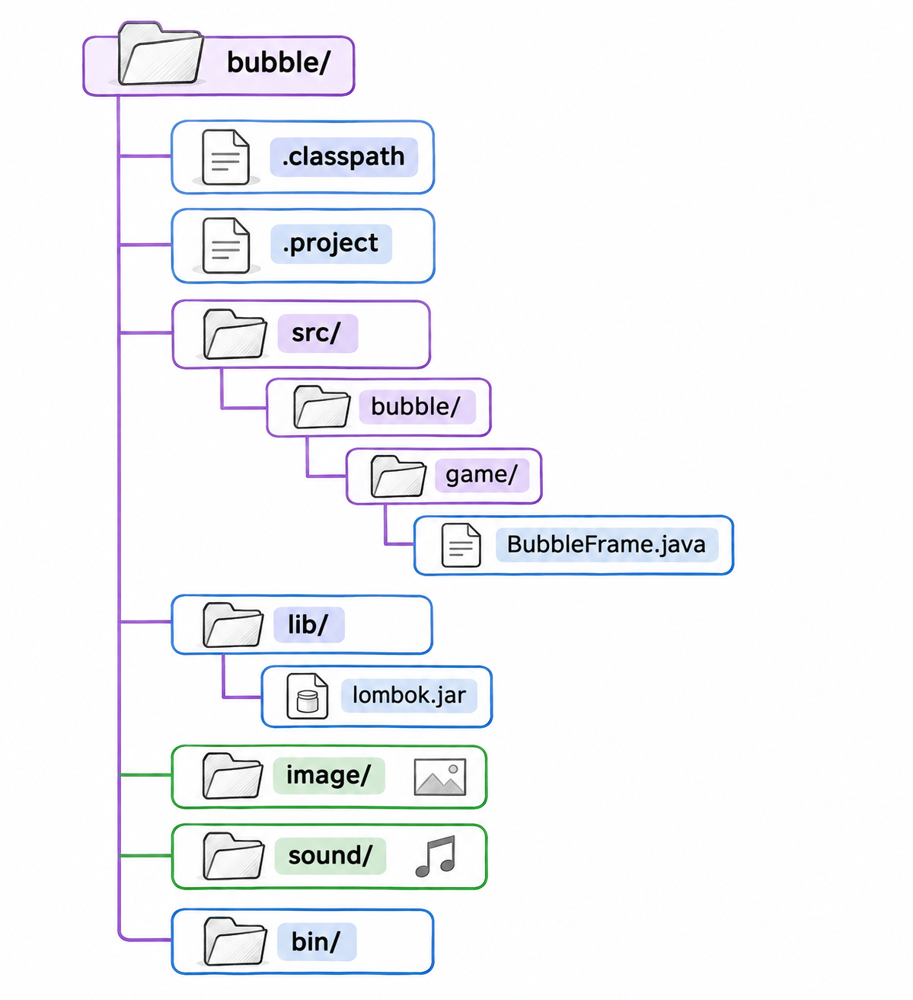

1장. 프로젝트 뼈대
게임 코드를 작성하려면 먼저 실행되는 프로젝트가 있어야 합니다. 이 장에서는 이클립스(Eclipse)에 프로젝트를 만들고, 콘솔에 준비 문구를 출력합니다. 이어서 Lombok을 설정하고 제공받은 그림·소리 파일을 배치합니다.
학생이 사용하는 프로젝트 폴더는 bubble입니다. 코드는 src/bubble/game에 직접 작성하고, 그림과 소리는 제공받은 파일을 넣습니다. 장을 마칠 때마다 완성한 코드를 ex01부터 ex15까지의 패키지에 복사해 보관합니다.
1-1 이클립스 프로젝트와 main 만들기
뒤 장에서 게임 창과 캐릭터를 추가하려면 자바 프로그램이 실행되는지부터 확인해야 합니다. 아직 게임 창은 만들지 않습니다. main()을 실행해 콘솔에 버블 게임 준비가 나타나면 첫 준비가 끝납니다.
프로젝트와 클래스 만들기
이 책은 JDK 21을 기준으로 합니다. 이클립스에서 File → New → Java Project를 선택합니다. 프로젝트 이름은 bubble로 입력하고, 실행 환경은 JavaSE-21로 지정합니다. 소스 폴더는 src, 컴파일 결과를 저장할 폴더는 bin을 사용합니다. module-info.java를 만들지 않도록 설정하고 프로젝트를 생성합니다.
src에서 bubble.game 패키지를 만듭니다. 그 안에 BubbleFrame 클래스를 만들고 다음 코드를 작성합니다.
이 책은 코드에서 추가하거나 삭제할 줄을 diff 형식으로 표시합니다. 앞에 +가 붙은 줄은 + 기호를 제외하고 입력합니다. -가 붙은 줄은 기존 코드에서 삭제합니다. @@로 시작하는 줄은 수정 위치를 알려 주는 표시이므로 입력하지 않습니다. 표시가 없는 줄은 수정 위치를 찾기 위한 기존 코드입니다.
<?xml version="1.0" encoding="UTF-8"?><classpath> <classpathentry kind="src" path="src"/> <classpathentry kind="con" path="org.eclipse.jdt.launching.JRE_CONTAINER/org.eclipse.jdt.internal.debug.ui.launcher.StandardVMType/JavaSE-21"/> <classpathentry kind="output" path="bin"/></classpath><?xml version="1.0" encoding="UTF-8"?><projectDescription> <name>bubble</name> <comment></comment> <projects> </projects> <buildSpec> <buildCommand> <name>org.eclipse.jdt.core.javabuilder</name> <arguments> </arguments> </buildCommand> </buildSpec> <natures> <nature>org.eclipse.jdt.core.javanature</nature> </natures></projectDescription>package bubble.game;public class BubbleFrame { public static void main(String[] args) { System.out.println("버블 게임 준비"); }}이클립스가 생성한 .project와 .classpath도 위에 함께 제시했습니다. 두 파일은 프로젝트 설정 파일입니다. 직접 새로 만들기보다 생성된 내용이 제시된 설정과 같은 역할을 하는지 확인합니다.
.project에는 프로젝트 이름과 자바 프로젝트 설정이 들어갑니다. org.eclipse.jdt.core.javabuilder는 자바 소스를 빌드하는 기능을 지정합니다. org.eclipse.jdt.core.javanature는 이클립스가 이 프로젝트를 자바 프로젝트로 인식하게 합니다.
.classpath는 소스와 라이브러리, 컴파일 결과의 위치를 정합니다. 클래스 경로(classpath)는 컴파일하거나 실행할 때 필요한 클래스를 찾는 경로입니다.
| 설정 | 역할 |
|---|---|
kind="src" path="src" | 자바 소스를 src에서 찾습니다. |
kind="con" ... JavaSE-21 | JDK 21의 표준 라이브러리를 사용합니다. |
kind="output" path="bin" | 컴파일한 .class 파일을 bin에 저장합니다. |
bin은 컴파일할 때 자동으로 생성되는 폴더입니다. 소스 파일은 src에 작성하고, bin 안의 파일은 직접 고치지 않습니다.
main에서 준비 문구 출력하기
BubbleFrame.java의 패키지는 bubble.game입니다. 따라서 파일도 소스 폴더 아래의 bubble/game에 놓습니다.
main()은 프로그램 실행을 시작하는 메서드입니다. 지금은 System.out.println()으로 준비 문구만 출력합니다. 클래스 이름은 BubbleFrame이지만, 아직 창을 만드는 코드는 없습니다.
이클립스에서 BubbleFrame.java를 선택하고 Run As → Java Application을 실행합니다. Console 탭에 다음 문구가 나타납니다.
실행 결과
버블 게임 준비문구를 출력한 뒤에는 실행할 코드가 없으므로 프로그램이 종료됩니다.
터미널에서 컴파일하고 실행하기
터미널 명령은 모두 bubble 폴더에서 입력합니다. 뒤 장에서는 그림과 소리도 이 폴더를 기준으로 읽으므로 실행 위치를 처음부터 맞춰 둡니다.
아직 Lombok을 붙이기 전이므로 다음 두 명령을 차례로 실행합니다. 명령은 Windows 기준입니다.
javac -encoding UTF-8 -d bin src/bubble/game/*.java
java -cp bin bubble.game.BubbleFramejavac는 자바 소스를 .class 파일로 바꾸는 컴파일러입니다. -encoding UTF-8은 소스 파일을 읽을 때 사용할 문자 인코딩을 지정합니다. 소스도 UTF-8로 저장해야 한글이 올바르게 컴파일됩니다. -d bin은 컴파일 결과를 저장할 위치를 지정합니다.
첫 명령이 성공하면 두 번째 명령으로 프로그램을 실행합니다. java는 bin에서 클래스를 찾아 bubble.game.BubbleFrame의 main()을 호출합니다. 실행 결과는 이클립스에서 실행했을 때와 같습니다.

1-2 Lombok 붙이기
뒤 장에서는 캐릭터의 위치나 상태를 읽고 바꾸는 코드가 늘어납니다. getter와 setter를 매번 직접 작성하지 않도록 Lombok을 미리 붙입니다. Lombok은 어노테이션을 읽어 컴파일 과정에서 필요한 코드를 생성하는 도구입니다.
이번 절에서는 Lombok을 사용할 환경만 준비합니다. BubbleFrame.java에는 아직 Lombok 어노테이션을 넣지 않습니다.
라이브러리 등록하기
bubble 바로 아래에 lib 폴더를 만듭니다. 제공받은 lombok.jar를 넣어 경로를 lib/lombok.jar로 맞춥니다.
이클립스에서도 Lombok이 생성한 메서드를 인식하도록 설정해야 합니다. 이클립스를 종료한 뒤 lombok.jar 설치 프로그램을 실행합니다.
java -jar lib/lombok.jar설치 프로그램에서 사용 중인 이클립스의 실행 파일을 지정해 설치합니다. 설치가 끝나면 이클립스를 다시 시작합니다. Lombok 파일은 프로젝트가 사용하는 JDK 21을 지원해야 합니다.
다음으로 .classpath에 라이브러리 경로를 추가합니다.
<classpath> <classpathentry kind="src" path="src"/> <classpathentry kind="con" path="org.eclipse.jdt.launching.JRE_CONTAINER/org.eclipse.jdt.internal.debug.ui.launcher.StandardVMType/JavaSE-21"/> <classpathentry kind="lib" path="lib/lombok.jar"/> <classpathentry kind="output" path="bin"/></classpath>새로 추가한 kind="lib" 항목은 외부 라이브러리 파일의 위치를 지정합니다. lib/lombok.jar는 bubble 폴더를 기준으로 한 경로입니다.
이클립스에서는 lombok.jar를 마우스 오른쪽 버튼으로 눌러 Build Path → Add to Build Path로 등록해도 됩니다. 등록 뒤에는 .classpath에 같은 라이브러리 항목이 들어갔는지 확인합니다. 같은 항목을 두 번 추가하지 않습니다.
이클립스에 Lombok을 설치하는 작업과 프로젝트에 라이브러리를 등록하는 작업은 둘 다 필요합니다. 설치는 편집기가 생성된 메서드를 인식하게 하고, 라이브러리 등록은 프로젝트가 Lombok을 참조하게 합니다.
Lombok을 포함해 컴파일하기
터미널에서는 다음 명령으로 빌드합니다.
javac -encoding UTF-8 -d bin -cp lib/lombok.jar -processorpath lib/lombok.jar src/bubble/game/*.java-cp는 컴파일에 필요한 라이브러리 경로를 지정합니다. -processorpath는 어노테이션 처리기(annotation processor)를 찾을 경로입니다. 어노테이션 처리기는 컴파일 중 어노테이션을 읽어 필요한 코드를 생성합니다. 두 옵션 모두 lib/lombok.jar를 가리킵니다.
소스 경로의 *.java는 해당 폴더의 모든 자바 파일을 뜻합니다. 뒤 장에서 클래스가 늘어나도 이 형태를 유지합니다. 파일 하나만 지정하면 함께 컴파일해야 할 다른 소스가 처리 대상에서 빠질 수 있습니다.
컴파일이 성공하면 실행합니다.
java -cp "bin;lib/lombok.jar" bubble.game.BubbleFrameWindows에서는 클래스 경로 여러 개를 세미콜론(;)으로 구분합니다. 여기서는 컴파일 결과가 있는 bin과 Lombok 파일을 함께 지정했습니다.
실행 결과
버블 게임 준비Lombok을 추가해도 출력은 같습니다. 아직 어노테이션을 사용하지 않았으므로 기존 코드가 컴파일되고 실행되는지만 확인합니다.
Windows 명령 프롬프트나 PowerShell 7 이상에서는 빌드와 실행을 한 줄로 묶을 수도 있습니다.
javac -encoding UTF-8 -d bin -cp lib/lombok.jar -processorpath lib/lombok.jar src/bubble/game/*.java && java -cp "bin;lib/lombok.jar" bubble.game.BubbleFrame&& 뒤의 명령은 앞의 컴파일이 성공했을 때만 실행됩니다. Windows PowerShell 5.1에서는 앞서 제시한 두 명령을 한 줄씩 실행합니다.
1-3 그림과 소리 파일 넣기
다음 장부터 게임 창에 그림을 표시합니다. 코드를 작성한 뒤 화면을 바로 확인하려면 그림 파일이 정해진 위치에 있어야 합니다. 소리 파일도 함께 배치해 두면 소리를 다루는 장에서도 같은 프로젝트를 이어서 사용합니다.
제공받은 image와 sound 폴더를 bubble 바로 아래에 복사합니다. 파일 이름과 확장자는 바꾸지 않습니다.

image와 sound는 src나 bin 안에 넣지 않습니다. 게임은 실행 위치인 bubble 폴더를 기준으로 두 폴더를 찾습니다. 예를 들어 image/로 시작하는 경로는 bubble 바로 아래의 image 폴더를 뜻합니다.
이번 절에서는 자바 코드를 추가하지 않습니다. 이클립스에서 프로젝트를 선택하고 Refresh를 실행하면 외부에서 복사한 폴더와 파일이 표시됩니다.
확인 결과
image와 sound 폴더에 제공된 그림·소리 파일이 합계 13개 있는지 확인합니다. 폴더가 한 번 더 중첩되지 않았는지도 확인합니다. image 안에 또 다른 image 폴더가 생겼다면 제공 파일을 한 단계 위로 옮깁니다.
프로그램을 다시 실행하면 콘솔에는 여전히 버블 게임 준비가 출력됩니다. 파일을 복사한 것만으로 그림이 나타나거나 소리가 재생되지는 않습니다. 다음 장에서 파일을 읽어 게임 창에 표시하는 코드를 작성합니다.
1장 완성 코드 보관하기
src 아래에 bubble.ex01 패키지를 만듭니다. bubble.game의 BubbleFrame.java를 복사하고, 복사본의 패키지 선언을 package bubble.ex01;로 맞춥니다. 이클립스의 복사 기능을 사용했다면 패키지 선언이 바뀌었는지 확인합니다.
다음 장의 코드는 계속 bubble.game에 작성합니다. bubble.ex01에는 이번 장을 마친 상태를 남겨 둡니다.
완성 코드를 터미널에서 실행할 때는 소스 경로와 실행 클래스의 패키지를 함께 바꿉니다.
javac -encoding UTF-8 -d bin -cp lib/lombok.jar -processorpath lib/lombok.jar src/bubble/ex01/*.java
java -cp "bin;lib/lombok.jar" bubble.ex01.BubbleFrame복사본에서도 버블 게임 준비가 출력되면 1장 코드 보관이 끝납니다.